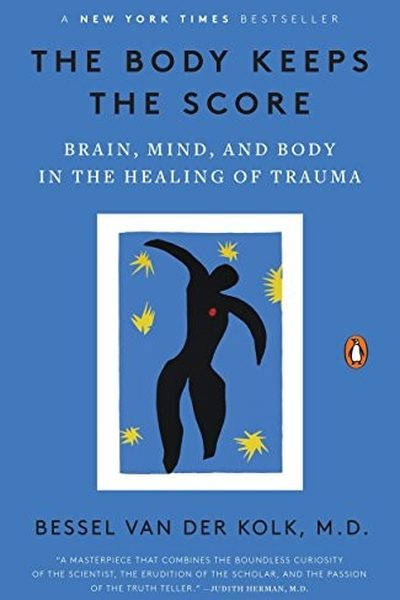

Library › Psychology & People
The Body Keeps the Score — Summary & Key Lessons

The #1 book on trauma — how it reshapes the brain and body, and the science-backed ways to heal.
📖 OPEN THE FULL INTERACTIVE BREAKDOWN →🌐 Read it in Hindi, Hinglish, Gujarati, Tamil & 22 more languages — free, with audio.
💡 The Big Idea
Van der Kolk, one of the world's leading trauma researchers, shows that trauma physically rewires the brain: it hijacks the alarm system, silences the speech center, and stores the experience in the body as chronic tension, panic and shame. Talk therapy alone can't reach what the body remembers. Healing comes through bottom-up approaches — breath, movement, EMDR, yoga, play, and safe human connection — that teach the body it is no longer in danger.
🧠 The 5 Key Lessons
Lesson 1: Trauma Lives in the Body
The Rediscovery of Trauma
Trauma is not only a memory — it's a physical imprint. The brain's alarm system gets stuck in 'on', muscles stay braced, and the body keeps reliving the danger even when the mind has moved on. This is why survivors often can't 'think their way out': the body is still fighting a war the mind believes is over.
📖 Example: Van der Kolk describes patients whose heart rates and stress hormones stay elevated decades after the event — and how a car accident survivor's body would freeze every time she heard a similar engine sound, years later, without conscious memory of why. Read the full example →
⚡ Do this: Notice where stress shows up in YOUR body — jaw, shoulders, stomach. That map is the first step: your body talks; learn to listen before you fix.
Lesson 2: The Alarm System That Won't Turn Off
The Brain and Body on Trauma
Trauma hijacks the brain's smoke detector (amygdala) so it over-fires, while the rational control tower (prefrontal cortex) goes quiet. People become either hyper-aroused (panic, rage) or numbed out (checked out, dissociated) — two sides of the same stuck alarm.
📖 Example: Veterans in the book re-experience combat as if it's happening now — a car backfire sends them diving for cover. Their brains can't tell past from present because the alarm never got the all-clear signal. Read the full example →
⚡ Do this: When you overreact to a small trigger, pause and label it: 'That's my alarm, not the real threat.' Naming the mechanism creates a sliver of choice.
Lesson 3: Words Fail — That's Why We Need the Body
Language and the Body
Trauma silences the speech center (Broca's area) — the brain literally goes non-verbal during terror, which is why memories feel wordless. Talking about it helps, but only after the body feels safe enough. Bottom-up approaches — breath, movement, touch, rhythm — reach the parts words can't.
📖 Example: Van der Kolk's patients often couldn't describe their trauma; instead their bodies told the story — a tightening chest, a frozen arm, a wince. Yoga and breathwork in his clinic helped many speak for the first time, because the body finally relaxed enough to… Read the full example →
⚡ Do this: Try one body-first practice this week — 10 slow breaths, a walk without headphones, or stretching. Notice what your mind does when your body settles.
Lesson 4: Connection Is the Antidote
Healing From Trauma
The single most protective factor in trauma recovery is safe connection: feeling seen, heard and held by another human. Isolation amplifies trauma; community metabolizes it. The research is clear — children and adults who have one safe person recover far better than those who suffer alone.
📖 Example: Studies of abused children show those with one stable, caring adult grow into far healthier adults. In the clinic, group therapy where patients finally felt 'I am not alone' produced some of the deepest healing. Read the full example →
⚡ Do this: Identify your one safe person — and schedule a real conversation this week. Connection is not a luxury; it's medicine.
Lesson 5: You Can Rewire the Brain — At Any Age
Paths to Recovery
Neuroplasticity means the brain can learn safety even after decades of terror. EMDR, internal family systems, theater, movement, EMDR and medication each offer a path — the common thread is helping the body experience 'this is now, and I am safe' until the alarm recalibrates.
📖 Example: The book follows patients who, after years of flashbacks, completed EMDR or theatre programs and reported the past finally 'feeling like the past'. One veteran who couldn't sleep in a bed for a decade began sleeping normally after body-based treatment. Read the full example →
⚡ Do this: If you carry old pain, pick ONE evidence-based path (EMDR, therapy, yoga, structured exercise) and take the first appointment this month. The brain can change — that's the whole promise.
✅ 5-Step Action Plan
- Map where stress lives in your body — one minute of noticing, daily.
- Label overreactions as 'alarm, not reality' before responding.
- Do one body-first practice daily: breath, walk, stretch.
- Schedule one real conversation with your safe person this week.
- If you carry old trauma, book one professional session this month.
💬 Best Quotes from The Body Keeps the Score
- “The body keeps the score.”
- “Trauma is not the story of something that happened back then — it's the current imprint of that pain, horror, and fear living inside people's bodies.”
- “Being able to feel safe with other people is probably the single most important aspect of mental health.”
Interactive version: mark lessons as read, listen in your language, share quote cards.